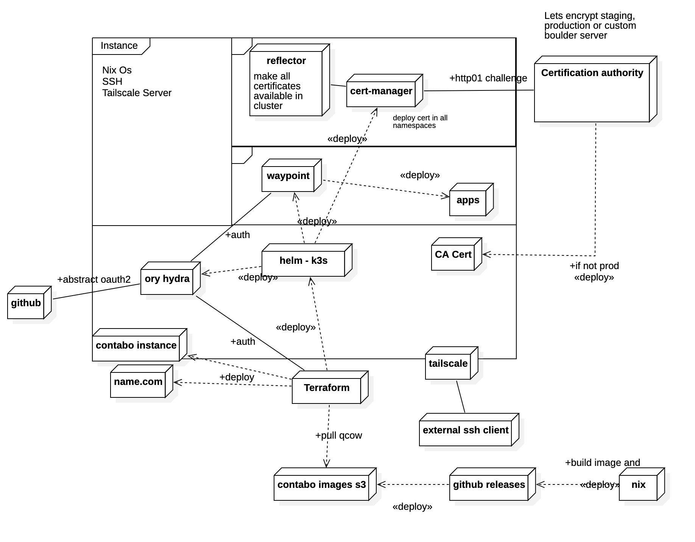

Print Site
Result¶
Architecture¶

Requirements¶
Note: You could easily adapt terraform to use another provider, it just needs to support
user_datawith a cloud-init compatible syntax.
Applying¶
Follow the steps in README.md to apply the infrastructure.
Index¶
Install PaaS for debug on a single machine¶
This PaaS solution targets small machine or on personal server. This one will be based on kubernetes for the containerization and waypoint for the deployment interface and automations.
The optics of this tooling will follow :
-
tThe principle of immutable infrastructure with the idea of recreating rather than updating. Thus we will use ready linux iso to deploy the kubernetes / waypoint platform directly on a server.
-
The principle infrastructure as code (IaC) by keeping all the specification of our infrastructure in configurations and scripts. We will also use basic tests of our configurations.
For this we will use a technical base composed of :
k3stool which simplifies the installation of kubernetes on ARM machines while remaining compatible with classic X64 architectures. It provides by default pods (containers in execution) to include features often sought on this type of edge computing configuration (reverse proxy, DNS configuration ...)- Nix Os to create iso images of linux machines
- Terraform to control many cloud platforms like Gandi, Contabo, GitHub, kubernetes...
Usefull links¶
Docker architecture :

K3s Architecture :

Note : Here we are only using single node mode
Usage¶
To open UI with https add pebble certificate to your truststore (this is automaticly done by nixos-darwin):
curl -k https://localhost:15000/intermediates/0 > ~/Downloads/pebble-ca.pem
sudo security add-trusted-cert -d -r trustAsRoot -k /Library/Keychains/System.keychain ~/Downloads/pebble-ca.pem
K3s PaaS¶
Authentication with dex is not working over waypoint UI in localhost because of non-trusted certificate.
Setup waypoint inside cluster before getting token :
Setup waypoint login context outside cluster :
You can use
waypoint.k3s.test:443in a simple network network (VPN, Firewall, DnsMasq are probably going to gives you trouble)
export WAYPOINT_SERVER_TOKEN=token
waypoint context create \
-server-addr='localhost:32701' \
-server-auth-token="$WAYPOINT_SERVER_TOKEN" \
-server-require-auth=true \
-server-tls-skip-verify=true \
-set-default waypoint.k3s.test-ui
Secure ssh connections¶
After applying infrastructure to terraform you will be able to log in ssh with :
Create git ops waypoint project¶
Only
waypoint initwill not configure git repo for you. You need to use customisedwaypoint project applyto do it.
Using ssh :
waypoint project apply \
-data-source=git \
-git-auth-type=ssh \
-git-private-key-path=$HOME/.ssh/id_rsa \
-git-url=git@github.com:hashicorp/waypoint-examples.git \
example-project
Using password :
waypoint project apply \
-data-source=git \
-git-auth-type=basic \
-git-username=<string> \
-git-password=<string> \
-git-url=https://github.com:hashicorp/waypoint-examples.git \
example-project
Setup waypoint hcl¶
Adapted example from Hashicorp
# Copyright (c) HashiCorp, Inc.
# SPDX-License-Identifier: MPL-2.0
project = "kubernetes-go-multiapp-k8s-ingress"
variable "namespace" {
default = "default"
type = string
description = "The namespace to deploy and release to in your Kubernetes cluster."
}
variable "registery_user" {
type = string
description = "Username to login to container registry"
}
variable "registery_token" {
type = string
description = "Token to login to container registry"
}
variable "k8s_ingress_annotations" {
type = map(string)
description = "Kubernetes annotation to make ingress working"
default = {
"nginx.ingress.kubernetes.io/rewrite-target" = "/"
"kubernetes.io/ingress.class" = "nginx"
}
}
variable "k8s_ingress_domain" {
type = string
description = "Kubernetes domain to use"
default = "waypoint.k3s.test"
}
app "default-app" {
labels = {
"service" = "default-app",
"env" = "dev"
}
env {
TEST_VAR = "0"
}
build {
use "pack" {}
registry {
use "docker" {
image = "loicroux/default-app"
tag = "1"
local = false
password = var.registery_token
username = var.registery_user
}
}
}
deploy {
use "kubernetes" {
probe_path = "/"
namespace = var.namespace
}
}
release {
use "kubernetes" {
namespace = var.namespace
ingress "http" {
default = true
path_type = "Prefix"
path = "/"
host = "go-multiapp.${var.k8s_ingress_domain}"
annotations = var.k8s_ingress_annotations
tls {
hosts = ["go-multiapp.${var.k8s_ingress_domain}"]
secret_name = "go-multiapp.${var.k8s_ingress_domain}-tls"
}
}
}
}
}
Help¶
FAQ¶
I tried several times the vm provision with different configurations forcing me to apply / destroy the stack several times. However, now I can't access the url with a dns error ?
It is probably the dns cache that returns the ip entry of an old vm because the time to live has not yet expired. For that in chrome we must clean this cache to make as if we had never been on the site. In your chrome browser chrome://net-internals/#dns do a "clear host cache" and try again.
Also you can use a global flush cache if it still doesn't work:
For real world testing, it's best to use different
dex_hostnameandpaas_hostnameentries that you don't use for one environment (staging or production).
Kubernetes on Vscode¶
To consolidate the debugging of our dev ops environment we can integrate our kubernetes cluster into the vscode IDE.
We will fetch the kubeconfig in our container that embeds K3s and the cluster.
Copy the kube config k3s with :
If you don't have kubectl locally:
Then we check with kubectl cluster-info which should give us the information of the k3s node.
Then on vscode use these user parameters to see and use the cluster¶
To show the path to home
cd ~ && pwd && cd -
And there you have access to an interface to control your cluster directly from vscode. Use this json configuration as much as you want in your application repositories to have a production-like experience.
Sources¶
Translated with www.DeepL.com/Translator (free version)